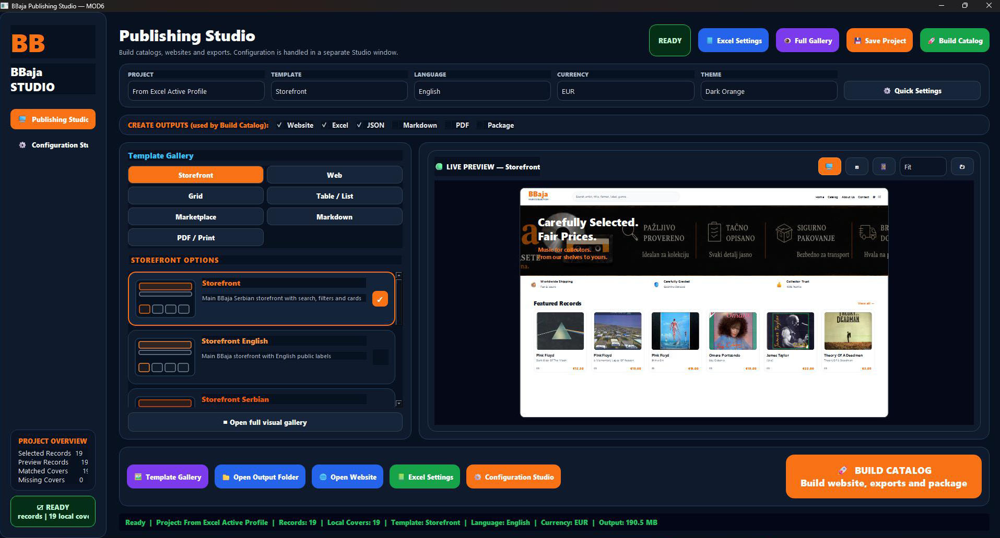
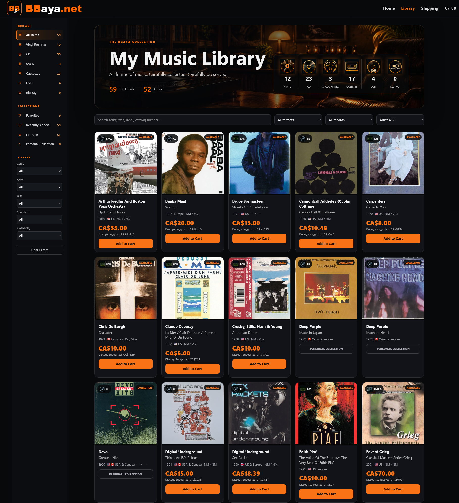
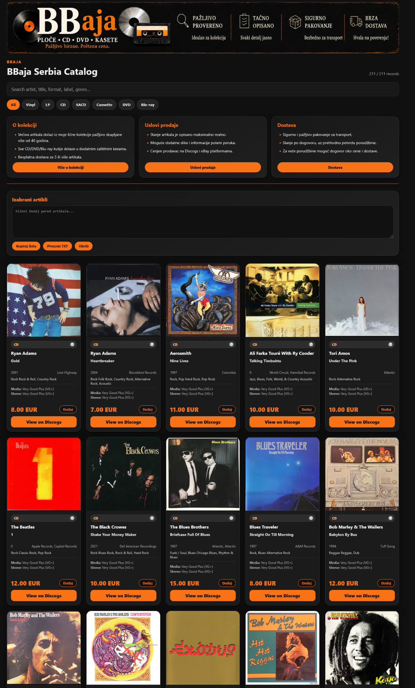

Select records, template, language, currency, branding and visible fields.

MOD6
Let the collection shine in its full glory.
MOD6 transforms the master collection into polished public-facing experiences. Build a complete website, a searchable storefront, a curated catalog, a printable list, an Excel edition, a PDF, a JSON feed or a full publishing package — all from the same trusted collection data.
One master collection. Unlimited presentations.
Select records, template, language, currency, branding and visible fields.
Generate the chosen website, catalog, list, PDF, Excel or package.

Present the collection as a polished, searchable and selling-ready storefront.

MOD6 separates the source data from its presentation. The same master can become a premium webstore, a compact catalog, a print-ready list or a structured export simply by changing the publishing profile.
A single project can produce multiple coordinated outputs. Website pages serve buyers and visitors, Excel supports business work, PDF supports sharing and printing, JSON supports feeds, and the publishing package keeps everything together.
The generated storefront is not a static spreadsheet dressed up for the web. It becomes a real browsing experience with format counts, search, filters, collection states, prices, record cards and individual detail pages.
Publishing profiles can use different languages, labels and currencies while keeping the same underlying master data. A Canadian storefront can show CAD, a Serbian catalog can show EUR, and each edition can use the appropriate public language and wording.
The collection, presented properly
MOD6 lets collectors and sellers decide how simple or sophisticated each publication should be.

The complete MOD6 publishing cycle
The final transformation
MOD6 turns reliable master data into websites, catalogs and publishing packages worthy of the collection itself.